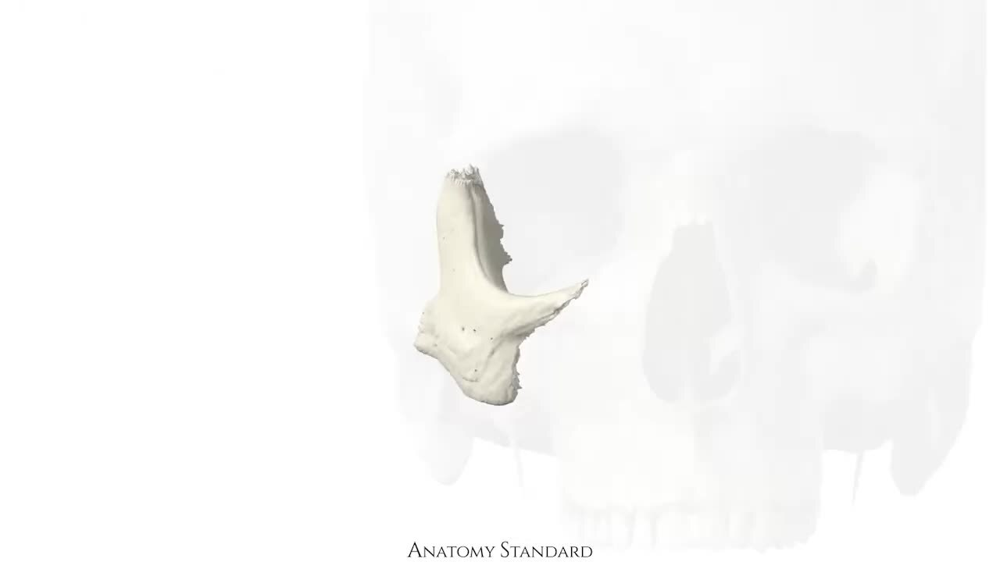
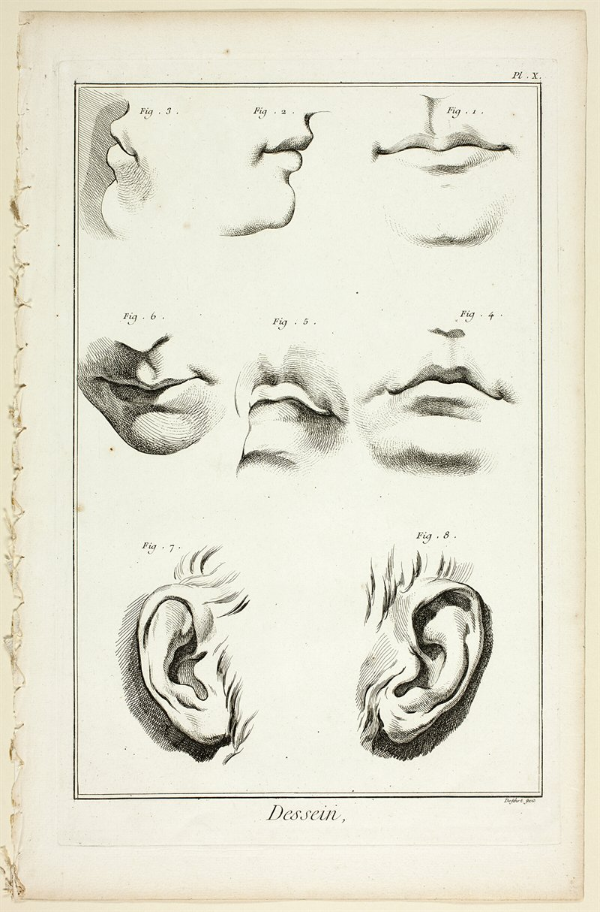

Busque no acervo
Como buscar O acervo responde por assunto, não por arquivo. Digite um tema, uma prova ou uma instituição.
Aula
Nefrolitíase - Parte II
Estratégia
Aula
Nefrolitíase - Parte III
Estratégia
Aula
Nefrolitíase - Parte IV
Estratégia
e mais 1 resultado no acervo
O estudo inteiro,
MEDCURSO26:12 / 42:00
Anatomia · cabeça e pescoço
Acervo
10.532 aulas, 19.239 materiais
Adolescente de 16 anos, sexo masculino, é levado à consulta por queda no rendimento escolar nos últimos seis meses. A mãe relata irritabilidade, mudança de amigos e descuido com a higiene. Era excelente aluno, mas será reprovado.
A) transtorno bipolar.
B) depressão maior.
C) abuso de substâncias ilícitas.
D) depressão persistente (distimia).
E) transtorno de ansiedade.
Questões
953 questões, 155 instituições
SEG
Clínica
2h
2h
TER
Pediatria
1h
1h
QUA
Cirurgia
2h
2h
QUI
GO
1h
1h
SEX
Revisão
2h
2h
Planner
A semana cabe no seu tempo.
Por que a B está correta?
Mentor IA O quadro de seis meses reúne queda do rendimento, irritabilidade, isolamento e descuido pessoal. É a hipótese mais provável entre as opções.
Mentor IA
A dúvida não espera.
nefrolitíase
Nefrolitíase · Parte IV Estratégia
Nefrolitíase · Parte V Estratégia
Nefrolitíase · Parte VI Estratégia
Busca
Ache o assunto, não o arquivo.
PDF
Memorex Pediatria
ApostilaPDF
Rastreamentos
PreventivaPDF
Memorex Cirurgia
ApostilaApostilas
PDF e reader HTML.
68%12 dias de estudo
Progresso
O que você já viu.
Cardio78
Pediatria64
Cirurgia52
Radar
Onde apertar o estudo.
155 instituições
Questões de 2018 a 2026.
SES-PE
AMRIGS
SES-DF
USP-RP
IAMSPE
FGV
Como funciona
Um dia de estudo tem camadas. O Cuscuz-MED junta todas no mesmo lugar, para você escolher o assunto, assistir, responder e revisar sem trocar de aba.
Comece pela área que a prova cobra. O acervo está separado por curso e assunto, sem planilha no meio.
MEDCURSO1.237 aulas
Estratégia614 aulas
SANAR290 aulas
Apostilas3.122 PDFs
As aulas e apostilas abrem no navegador, direto do acervo. Vídeo, PDF ou reader HTML, sem baixar nada.

Anatomia · cabeça e pescoço
Treine com questões oficiais. Cada resposta mostra o gabarito, a instituição e o ano da prova.
Adolescente de 16 anos, sexo masculino, é levado à consulta por queda no rendimento escolar nos últimos seis meses. A mãe relata irritabilidade, mudança de amigos e descuido com a higiene. Era excelente aluno, mas será reprovado.
A) transtorno bipolar.
B) depressão maior.
C) abuso de substâncias ilícitas.
D) depressão persistente (distimia).
E) transtorno de ansiedade.
O planner distribui o conteúdo pelas suas horas livres e mostra o que já foi visto. A semana fica do tamanho que você tem.
SEG
Clínica
2h
2h
Revisão
1h
1h
TER
Pediatria
1h
1h
QUA
Cirurgia
2h
2h
Questões
1h
1h
QUI
GO
1h
1h
SEX
Preventiva
2h
2h
Antes de entrar
O essencial, sem letra miúda.

Serve para qual prova?
Para a residência médica. O banco reúne questões de 155 instituições, de 2018 a 2026, em R1 e áreas como Pediatria, Clínica Médica, Cirurgia, Ginecologia e Obstetrícia e Medicina Preventiva.
Preciso instalar algo?
Não. O Cuscuz-MED abre no navegador, no computador e no celular, com login.
O acervo fica no meu computador?
Não. As aulas e apostilas são transmitidas do acervo; você assiste e lê dentro da plataforma.
As questões têm gabarito?
Sim. Cada questão mostra a alternativa correta, a instituição, o ano e a prova de origem.
Quais cursos estão no acervo?
MEDCURSO, Estratégia, SANAR, Apostilas, Questões em PDF e APS.
O Mentor IA está incluído?
Sim. Ele aparece dentro do estudo para responder dúvidas com o contexto da questão ou da aula. Quando o serviço de IA não responde, a plataforma continua funcionando com o conteúdo local.
Sua camada
começa aqui.
10.532aulas
19.239materiais
953questões
Entre com sua conta e continue de onde parou. O acervo, as questões e o planner estão no mesmo lugar.
Entrar na plataforma